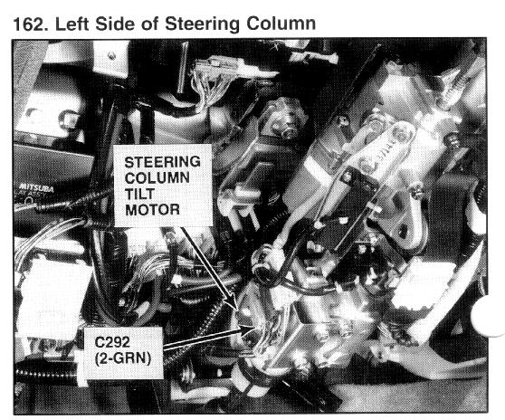

Operation CHARM
: Car repair manuals for everyone.
Home
>>
Acura
>>
1994
>>
Legend Sedan V6-3206cc 3.2L SOHC FI
>>
Repair and Diagnosis
>>
Steering and Suspension
>>
Steering
>>
Steering Column
>>
Tilt Wheel Motor
>>
Locations
>>
Steering Column Tilt Motor
Steering Column Tilt Motor

Left Side of Steering Column